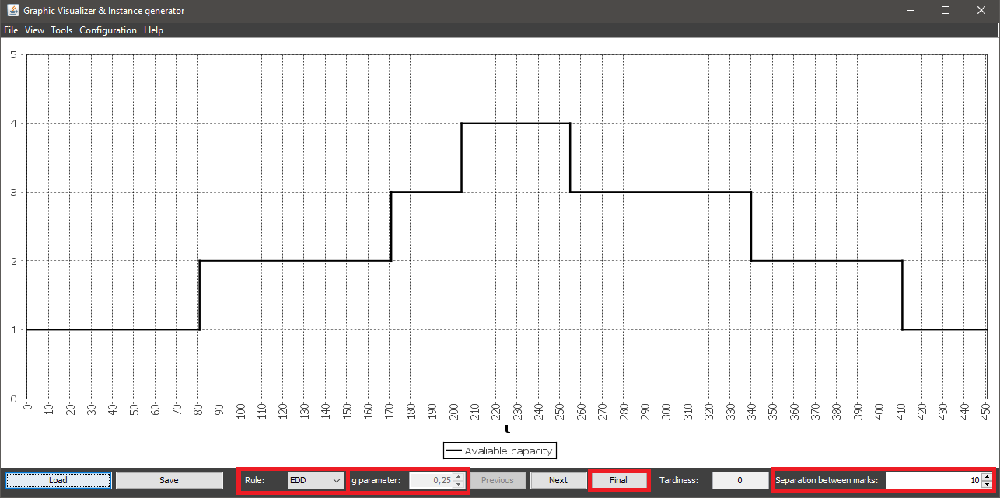
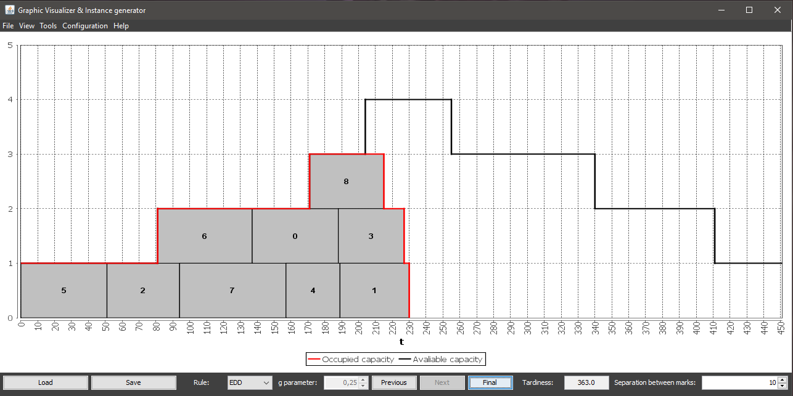

To perform an scheduling at once you must use the Final button at the bottom of the main window, and select a rule in the drop-down, marked with the Rule label at the left bottom corner of the window. This button is always enabled.
The option to modify the g parameter is only enabled when the chosen rule is ATC, and it allows you to chose values between 0.01 and 1.
You can also modify the numeric value specified next to the Separation between marks label to choose which separation between graduation marks you want to display as you schedule the instance.
When the scheduling is completed, the chart at the main window will be updated.
Everytime a new scheduling is completed the tardiness value, displayed at the bottom right corner of the main window, will be updated.